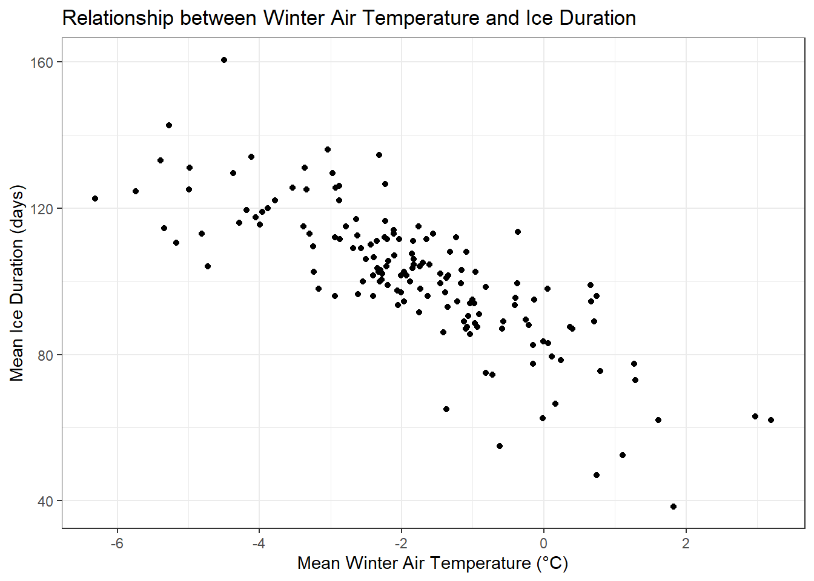
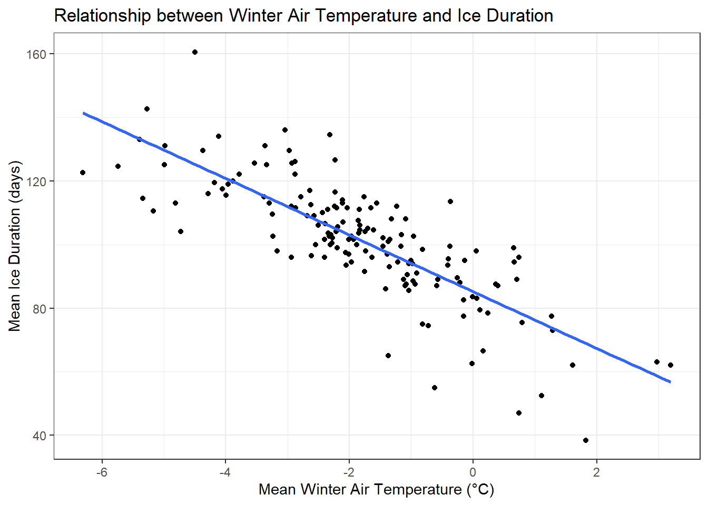

icecover_temp <- avg_icecover %>%inner_join(ntl_winter_airtemp, by ="wyear")
2. Exploratory plot
ggplot(data = icecover_temp, aes(x = mean_air_temp, y = mean_duration)) +geom_point() +labs(x ="Mean Winter Air Temperature (°C)",y ="Mean Ice Duration (days)",title ="Relationship between Winter Air Temperature and Ice Duration" ) +theme_bw()

3. Correlation test
shapiro.test(icecover_temp$mean_air_temp)
Shapiro-Wilk normality test
data: icecover_temp$mean_air_temp
W = 0.98939, p-value = 0.3073
shapiro.test(icecover_temp$mean_duration)
Shapiro-Wilk normality test
data: icecover_temp$mean_duration
W = 0.97623, p-value = 0.009812
ggplot(data = icecover_temp, aes(x = mean_air_temp, y = mean_duration)) +geom_point() +geom_smooth(method ="lm", se =FALSE) +labs(x ="Mean Winter Air Temperature (°C)",y ="Mean Ice Duration (days)",title ="Relationship between Winter Air Temperature and Ice Duration" ) +theme_bw()
`geom_smooth()` using formula = 'y ~ x'

6. Model coefficients
summary(ice_temp_model)
Call:
lm(formula = mean_duration ~ mean_air_temp, data = icecover_temp)
Residuals:
Min 1Q Median 3Q Max
-35.749 -5.303 -0.122 6.214 35.242
Coefficients:
Estimate Std. Error t value Pr(>|t|)
(Intercept) 85.186 1.363 62.50 <2e-16 ***
mean_air_temp -8.903 0.552 -16.13 <2e-16 ***
---
Signif. codes: 0 '***' 0.001 '**' 0.01 '*' 0.05 '.' 0.1 ' ' 1
Residual standard error: 11.43 on 150 degrees of freedom
Multiple R-squared: 0.6343, Adjusted R-squared: 0.6319
F-statistic: 260.2 on 1 and 150 DF, p-value: < 2.2e-16